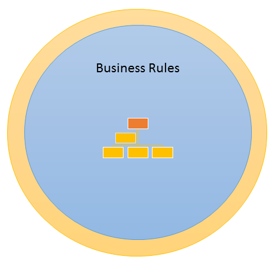
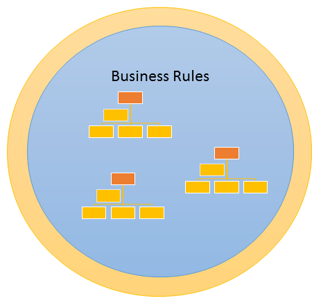

Domain Modeling

What is it?
Modeling the business problem using Object Oriented programming
Domain Logic Patterns
- Transaction Script
- Table Module
- * Domain Modeling *
- Service Layer

Domain Driven Design
- Ubiquitous Language - Not doing
- Domain Modeling Patterns
When to use it?
business rules are complex and ever changing
Works well with Clean Architecture
as core of code base
Domain Models can be anywhere.
A Domain Model should not be coupled to any persistence mechanism.
Bounded Context
Single Domain
Contexts
NO single model for the entire business
Contexts should...
- Have their own Data Persistence
- Be Independent and Separated
Do not let a user interface design influence dominate context design.
Domain Modeling
Building Blocks
- Entity
- Value Object
- Aggregate
- Repository
- Domain Services
- Domain Events
- Factories (Not Covering)
Entity
- Has an ID
- Contains Data and Business Logic
- Should Be Valid at All Times
public class Customer
{
public Customer(
Guid id,
string firstName,
string lastName)
{
Id = id;
FirstName = firstName;
LastName = lastName;
}
public Guid Id { get; private set; }
public string FirstName { get; private set; }
public string LastName { get; private set; }
public string GetLastFirstName()
{
return string.Format(
"{0}, {1}",
LastName,
FirstName);
}
}Value Object
- Cannot Stand Alone
- Option for Reducing Business Logic in Entity
public class Money
{
public Money(
decimal amount,
string currencyCode)
{
Amount = amount;
CurrencyCode = currencyCode;
}
public decimal Amount { get; }
public string CurrencyCode { get; }
public Money GetConvertedAmount(
string requestedCurrencyCode)
{
var convertedAmount = 0m;
// currency conversion business logic
return new Money(
convertedAmount,
requestedCurrencyCode);
}
}public class Customer
{
private readonly Money _yearToDateSpend;
public Customer(
Guid id,
string firstName,
string lastName,
Money yearToDateSpend)
{
Id = id;
FirstName = firstName;
LastName = lastName;
_yearToDateSpend = yearToDateSpend;
}
public Guid Id { get; private set; }
public string FirstName { get; private set; }
public string LastName { get; private set; }
public Money GetYearToDateSpend(
string currencyCode)
{
return _yearToDateSpend.GetConvertedAmount(
currencyCode);
}
public string GetLastFirstName()
{
return string.Format(
"{0}, {1}",
LastName,
FirstName);
}
}Aggregate
- Root entity of a graph entities and value objects.
- Transaction Boundary
- Concept Requires Practice
public class LineItem
{
public LineItem(
Guid lineItemId,
Guid productId,
int quantity)
{
Quantity = quantity;
ProductId = productId;
LineItemId = lineItemId;
}
public Guid LineItemId { get; private set; }
public Guid ProductId { get; private set; }
public int Quantity { get; private set; }
}public class Order
{
private readonly LineItem[] _lineItems;
public Order(
Guid orderId,
LineItem[] lineItems)
{
_lineItems = lineItems;
OrderId = orderId;
}
public Guid OrderId { get; private set; }
public LineItemSummary[] GetLineItems()
{
return _lineItems
.Select(l => new LineItemSummary(l.ProductId, l.Quantity))
.ToArray();
}
public class LineItemSummary
{
public LineItemSummary(
Guid productId,
int quantity)
{
Quantity = quantity;
ProductId = productId;
}
public Guid ProductId { get; private set; }
public int Quantity { get; private set; }
}
}Repository
- Domain Objects act Like a Collection / Stream
- Abstracts Persistence Mechanism from Domain Objects
- Natural Seam for Tests
public interface ICustomerRepository
{
Customer GetById(Guid id);
void Add(Customer customer);
void Remove(Customer customer);
}Domain Services
- Business Logic that is not appropriate for Entities
public class CustomerTotalYearToDateSpendCalculator
{
public Money GetTotalYearToDateSpend(
IEnumerable<Customer> customers,
string currencyCode)
{
var totalAmount = customers
.Select(c => c.GetYearToDateSpend(currencyCode))
.Sum(c => c.Amount);
return new Money(totalAmount, currencyCode);
}
}Domain Events
- Works Across Bounded Contexts
Event Implementation
- Delegates
- Domain Events Class from Udi Dahan
- NServiceBus
Automated Testing
The domain is a natural seam for testings.
You will get this wrong!
Do NOT do Domain Modeling without tests.